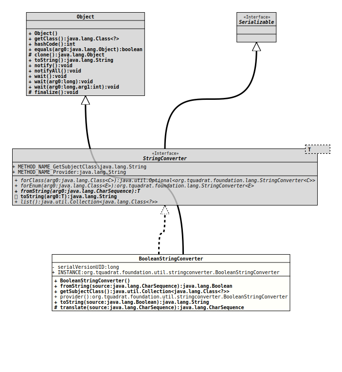

Module org.tquadrat.foundation.util
Class BooleanStringConverter
java.lang.Object
org.tquadrat.foundation.util.stringconverter.BooleanStringConverter
- All Implemented Interfaces:
Serializable,StringConverter<Boolean>
@ClassVersion(sourceVersion="$Id: BooleanStringConverter.java 1060 2023-09-24 19:21:40Z tquadrat $")
@API(status=STABLE,
since="0.0.6")
public class BooleanStringConverter
extends Object
implements StringConverter<Boolean>
An implementation of
The method
StringConverter
for boolean and
Boolean
values.The method
fromString(CharSequence)
will accept the String "true", irrespective of case, for the
value true, and any other String for false (including the
empty String!), while
Object.toString()
will only return "true" or "false" (or null if
the input is null). This behaviour can be changed by providing
different implementations for
translate(CharSequence)
and
toString(Boolean).- Author:
- Thomas Thrien (thomas.thrien@tquadrat.org)
- Version:
- $Id: BooleanStringConverter.java 1060 2023-09-24 19:21:40Z tquadrat $
- Since:
- 0.0.6
- See Also:
- UML Diagram
-

UML Diagram for "org.tquadrat.foundation.util.stringconverter.BooleanStringConverter"
{kind=link}
-
Field Summary
FieldsFields inherited from interface org.tquadrat.foundation.lang.StringConverter
METHOD_NAME_GetSubjectClass, METHOD_NAME_Provider -
Constructor Summary
Constructors -
Method Summary
Modifier and TypeMethodDescriptionfromString(CharSequence source) final Collection<Class<?>> Provides the subject class for this converter.static final BooleanStringConverterprovider()This method is used by theServiceLoaderto obtain the instance for thisStringConverterimplementation.protected CharSequencetranslate(CharSequence source) Translates the given String to either "true" or "false".
-
Field Details
-
INSTANCE
An instance of this class.
-
-
Constructor Details
-
BooleanStringConverter
public BooleanStringConverter()Creates a new instance ofBooleanStringConverter.
-
-
Method Details
-
fromString
- Specified by:
fromStringin interfaceStringConverter<Boolean>
-
getSubjectClass
Provides the subject class for this converter.- Returns:
- The subject class.
-
provider
This method is used by theServiceLoaderto obtain the instance for thisStringConverterimplementation.- Returns:
- The instance for this
StringConverterimplementation.
-
toString
- Specified by:
toStringin interfaceStringConverter<Boolean>
-
translate
Translates the given String to either "true" or "false". The default implementation just returns the argument.
If this method will be implemented differently, it is no longer guaranteed that
yieldstoString( fromString( s ) ) == struefor alls.- Parameters:
source- The original text; can benull.- Returns:
- The translated source; can be
nullifsourcewas alreadynull.
-